Start, pause, or resume
Tap the right-hand control to start the countdown. Tap it again to pause; another tap resumes from the remaining time.
MATCH SCORING
Smart-Score provides a dedicated scoring view for Straight Pool and one shared workflow for 8-Ball, 9-Ball, and 10-Ball. The controls below are available while a match is running.
ON EVERY SCORING PAGE
The discipline is shown in the center of the navigation bar. The hamburger button opens the main menu; the three match controls highlighted below work the same way in every discipline.
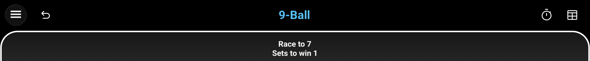
Undo restores the match state from before the most recent scoring action. It becomes available as soon as there is an action that can be reversed.
Shot Clock shows or hides the shot clock. When opened, the clock is reset to the configured shot time and waits for you to start it. Hiding it pauses the countdown.
Results Sheet opens the live match record. Straight Pool shows every inning with duration, points, and running score; 8-, 9-, and 10-Ball show the won racks grouped by set.
ALL DISCIPLINES
The Shot Clock is available from every scoring page. Tap the timer icon in the navigation bar to show it; the clock appears reset to the configured shot time and remains paused until you start it. The outer ring visualizes the remaining time as it counts down.
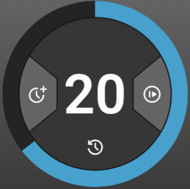
Above the first warning threshold, the remaining time and progress ring are blue.
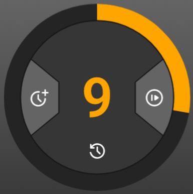
At the first warning threshold, the number and remaining ring turn orange and a single warning sound plays.
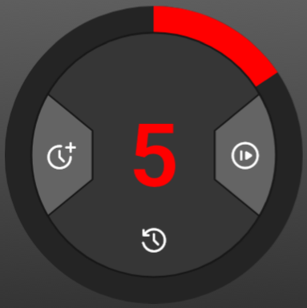
At the second warning threshold, the display turns red and a warning sounds once per second. A separate sound signals when time expires at zero.
Tap the right-hand control to start the countdown. Tap it again to pause; another tap resumes from the remaining time.
Tap anywhere inside the inner circle outside the two side wedges to reset the clock to the configured shot time and immediately begin a new countdown.
Tap the left-hand control to add the configured extension to the time still remaining. If the clock is running, it continues counting down with the added time.
14.1 CONTINUOUS
The active-player symbol identifies who is at the table. Below each score, Smart-Score continuously updates innings, the current run, the high run, and the average. The numbered controls let you adapt the current match directly from the scoring page.
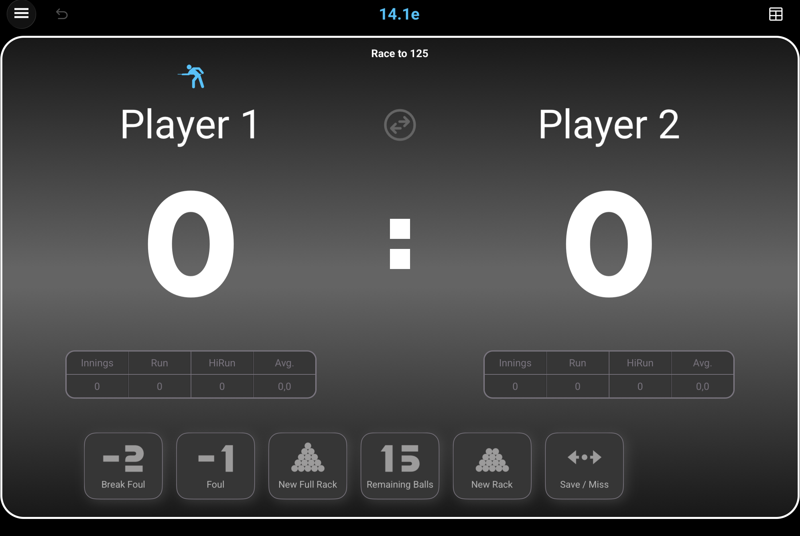
Race To can be changed for each individual match. Tap Race To, then choose the new target; it must remain higher than the score already reached by either player.
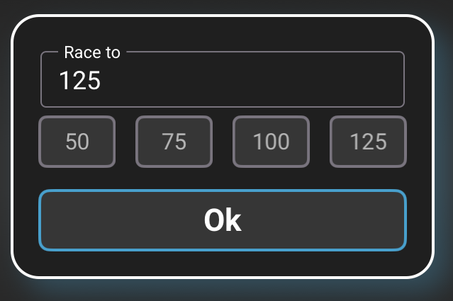
Player names can be edited during a running match. Tap either name to open the player dialog and change one or both names. As you type, Smart-Score suggests names found in previous archived matches.
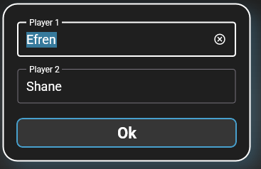
Player Swap exchanges the two player names between the left and right sides. Tap the circular double-arrow button between the names.
The blue symbol above a name shows whose inning is in progress. It starts above the left-hand player and moves automatically when the inning passes to the opponent.
Tap the Results Sheet icon in the navigation bar to open the live match record. The header shows the match date, Race To target, and total duration. Each numbered row represents an inning and lists both players' time at the table, points recorded during that inning, and resulting cumulative score.
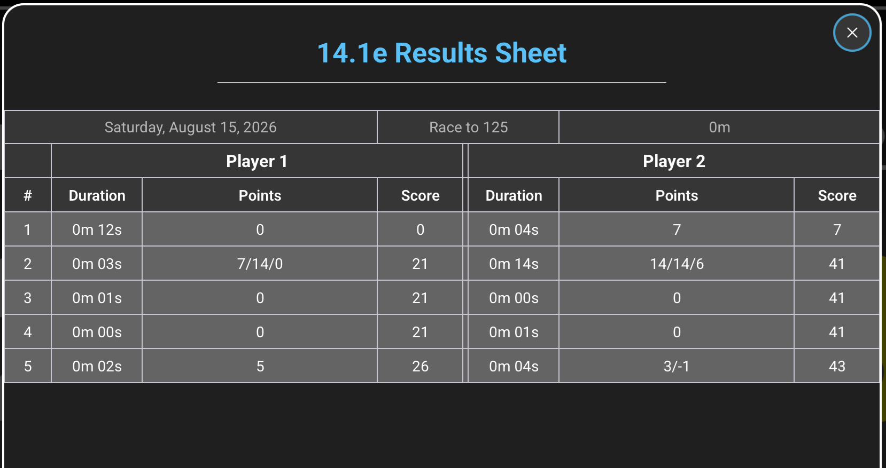
Coral numbers on the screenshot identify the button or buttons used for each action below.
Before ending an inning, tap Remaining Balls to open the selection view. Choose how many balls are still on the table. Smart-Score uses that value to calculate pocketed balls and update the score and statistics correctly.
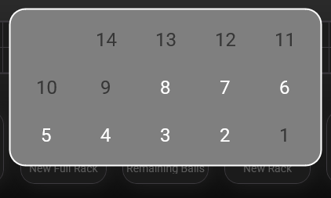
After the remaining balls are selected, Smart-Score highlights the two possible buttons.
Choose Foul to apply the foul penalty and pass play to the opponent.
Choose Save / Miss when the inning ends without a foul. Smart-Score then switches the active player.
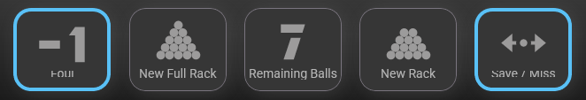
Choose New Rack for the regular 14-ball rerack when the break ball remains. Choose New Full Rack after all 15 balls have been pocketed. The same player continues the inning.
Break Foul is available at the start of a break. Smart-Score asks whether the opponent takes over; otherwise the original player continues with a newly racked set of balls.
ONE SHARED WORKFLOW
These three disciplines use exactly the same scoring screen and gestures. The page shows the rack target, sets required to win, both rack scores, the current breaker, and the sets already won. The numbered controls can be adjusted for the current match.

Race To and Sets to Win can be changed for each individual match. Tap either value to open the match-distance dialog, then enter the rack target and number of sets required to win. Both targets must remain higher than the rack scores or set totals already reached.
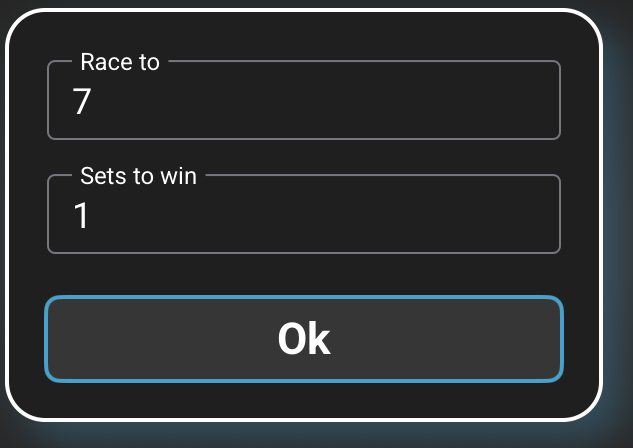
Player names can be edited during a running match. Tap either name to open the player dialog and change one or both names. As you type, Smart-Score suggests names found in previous archived matches.
Tap the Results Sheet icon in the navigation bar to review the match rack by rack. Each set has its own table: the numbered columns show the racks in playing order, a dot identifies the winner of each rack, and the final Score column totals the racks won by each player. The Duration row shows the time taken for every rack and the total set duration.
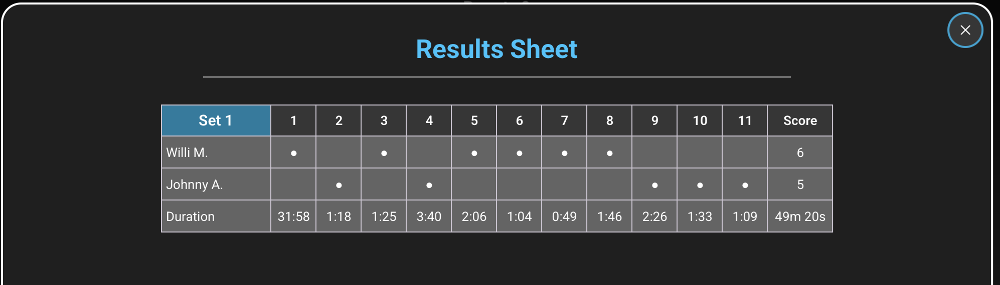
Coral numbers on the screenshot identify the controls described in the four cards below.
Swipe upward directly on a player's score number to add a won rack. Smart-Score records the rack and updates the next breaking player according to the configured break mode.
Swipe downward directly on a player's score number to reduce that player's score by one rack. You can also use Undo in the navigation bar to restore the complete previous match state.
The highlighted player icon identifies the player currently having the break. At 0:0 in the first set, tap either break indicator to choose the player who starts breaking, normally the player who won the lag. After play begins, Smart-Score manages the breaker automatically according to the break mode selected in Settings: Winner or Alternating.
The boxes below the break indicators show how many sets each player has already won in the current match.
ALL DISCIPLINES
Smart-Score opens the finish confirmation automatically as soon as a player reaches the match-winning target. In Straight Pool, this is the Race To score. In 8-Ball, 9-Ball, and 10-Ball, a set ends at its Race To score and the confirmation appears when the required number of sets has been won.
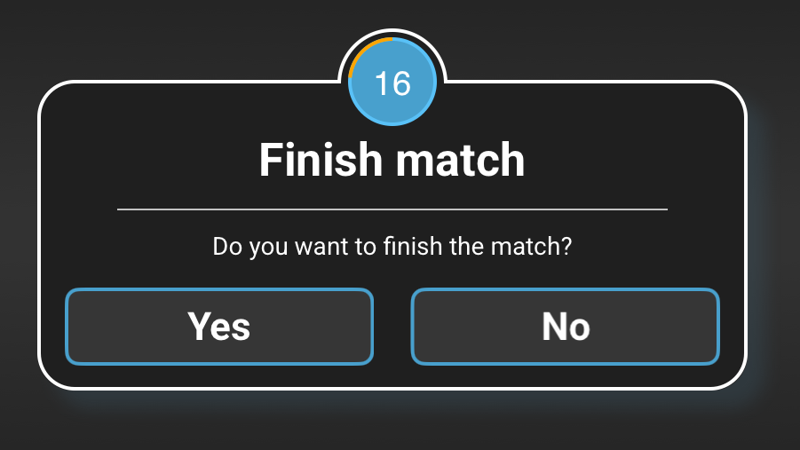
Tap Yes when the displayed result is correct. Smart-Score finalizes the match, disables further Undo actions, and saves the completed match in the archive.
Tap No if the winning action was entered by mistake. Smart-Score restores the previous match state so scoring can continue or be corrected.
The ring above the dialog counts down from 20 seconds. If no button is selected before it reaches zero, Smart-Score confirms and finalizes the match automatically.